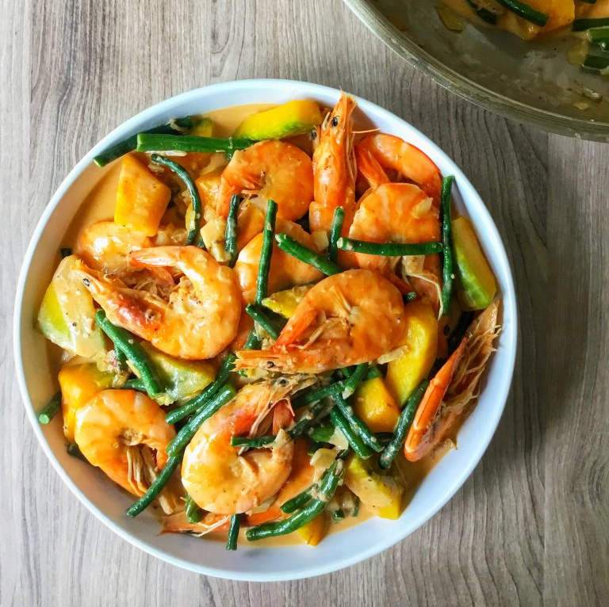

Ginataang Hipon

Ingredients
- • 1 kg fresh shrimp, cleaned
- • 1 can (400ml) coconut milk
- • 3 cloves garlic, minced
- • 1 medium onion, chopped
- • 2 tbsp fish sauce
- • 2 cups squash, cubed
- • 1 bunch string beans, cut into 2-inch lengths
- • 2 pieces green chili (siling haba)
- • Salt and pepper to taste
Instructions
- In a pan, sauté garlic and onion until fragrant.
- Add the squash and cook for 5 minutes.
- Pour in the coconut milk and bring to a gentle simmer.
- Add the string beans and shrimp. Cook until shrimp turns pink.
- Season with fish sauce, salt, and pepper to taste.
- Add the green chili for extra flavor. Simmer for another 2 minutes.
- Serve hot with steamed rice.